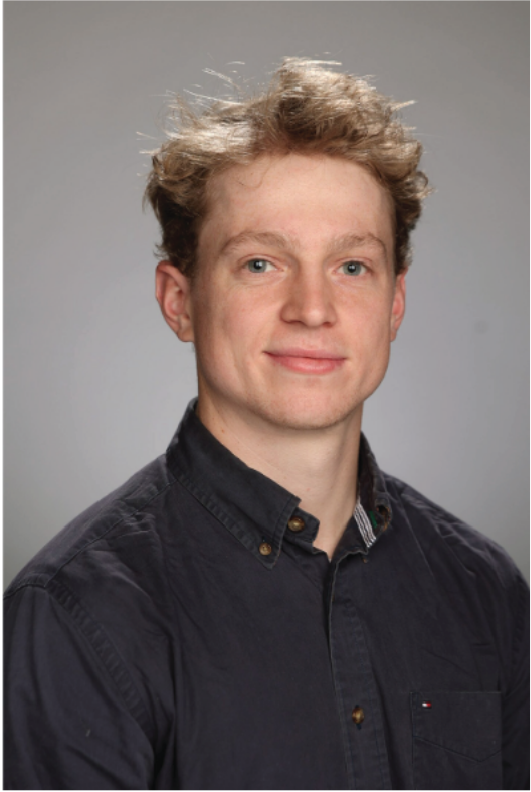

Orser Consulting
Geospatial & Remote Sensing

Jacob Orser is a geospatial professional specializing in remote sensing analysis, GIS solutions, and spatial data tools for conservation, agricultural, and land management applications.
His work spans the full data workflow — from merging multi-sensor archives and running analytical pipelines to building operational tools for field staff and delivering finished results to decision-makers. He has developed flood damage assessments, crop stress and yield models, habitat suitability analyses, and enterprise GIS applications across federal, state, and research contexts.
A core focus is translating complex spatial analysis into accessible, actionable tools for the landowners, conservationists, and operators who work closest to the ground — including published research on remote sensing classification methods, custom web applications for agricultural monitoring, and field-deployable GIS tools built for non-technical users.
Experience- Remote Sensing Researcher 2024–Present
- GIS Analyst 2023–2024
- GIS Engineer 2023
- Research Assistant · Remote Sensing & Ecology 2022
-
01 — Scoping call
Describe the question, data, and goals. I'll confirm feasibility and approach within 48 hours. -
02 — Proposal & timeline
Fixed-scope proposal with deliverables, timeline, and cost. -
03 — Analysis & delivery
Deliverables include shapefiles, reports, or interactive tools. Formats your team will actually use.
- Land trusts and conservation organizations
- Federal and state natural resource agencies
- Agricultural operators and agtech firms
- Research institutions and university programs
- Environmental consulting firms
Multispectral
Hyperspectral
VIIRS
QGIS
Google Earth Engine
STAC
JavaScript
HTML
SQL
Get in touch
Share what you're working on — I will respond within two business days to discuss how I can help. No commitment required.